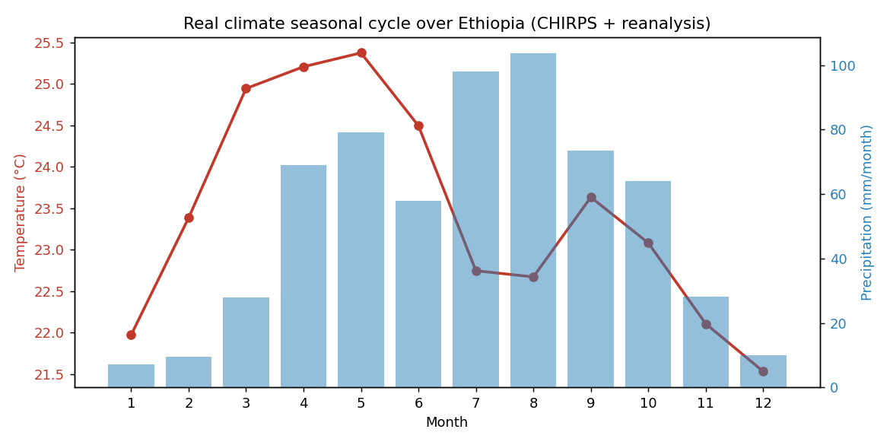

Module 10: Climate Indices and Extremes#
Learning Objectives#
After completing this module, you will be able to:
Define and compute temperature-based climate indices (frost days, tropical nights, heatwaves, etc.)
Compute precipitation-based indices (CDD, CWD, SDII, Rx1day, Rx5day, etc.)
Implement the full set of ETCCDI climate change detection indices
Use
cdo exprfor complex index calculationsAggregate extreme indices to seasonal and annual time scales
Interpret the physical meaning of each index
Prerequisites#
This module assumes you have completed Modules 1-9. You should be comfortable with temporal selection, spatial operators, statistics, and working with daily temperature (TG, TN, TX) and precipitation (RR) data.
Note
The ETCCDI indices require daily data: TG (mean temperature), TN (minimum temperature), TX (maximum temperature), and PR (precipitation). Ensure your data follows this convention or adjust variable names accordingly.

Fig. 6 Observed seasonal cycle over Ethiopia from CHIRPS precipitation and NCEP/DOE reanalysis temperature, illustrating the climate indices discussed in this module.#

Fig. 7 Real CHIRPS seasonal precipitation climatology over Ethiopia: Belgi (February-May), Kiremt (June-September), Bega (October-January), and the annual total. The maps show how the seasonal indices computed in this module are spatially distributed, with the main Kiremt rainy season dominating most of the country.#
10.1 Temperature Indices#
Temperature extremes have significant impacts on human health, agriculture, and ecosystems.
10.1.1 Temperature Anomalies#
Temperature anomalies measure deviation from a reference climatology.
# Compute monthly anomalies
cdo ymonsub monthly_temperature.nc monthly_anomaly.nc
# Standardized anomalies
cdo div -ymonsub monthly_temperature.nc -ymonstd monthly_temperature.nc standardized_anomaly.nc
10.1.2 Frost Days (FD)#
A frost day is defined as a day when the daily minimum temperature (TN) falls below 0°C.
cdo timsum -ltc,0 daily_tmin.nc frost_days.nc
Annual frost days:
cdo yearsum -ltc,0 daily_tmin.nc annual_frost_days.nc
Tip
Frost days are important for agriculture (growing season length) and infrastructure (road maintenance, heating demand).
10.1.3 Ice Days (ID)#
An ice day occurs when the daily maximum temperature (TX) remains below 0°C.
cdo yearsum -ltc,0 daily_tmax.nc ice_days.nc
10.1.4 Tropical Nights (TR)#
A tropical night occurs when the daily minimum temperature (TN) exceeds 20°C.
cdo yearsum -gtc,20 daily_tmin.nc tropical_nights.nc
Warning
The 20°C threshold is a standard definition, but regional definitions may vary. In some studies, tropical nights are defined as TN > 25°C for tropical regions.
10.1.5 Summer Days (SU)#
A summer day occurs when the daily maximum temperature (TX) exceeds 25°C.
cdo yearsum -gtc,25 daily_tmax.nc summer_days.nc
10.1.6 Growing Season Length (GSL)#
The growing season length is defined as the period between the first occurrence of at least 6 consecutive days with TG > 5°C (spring) and the first occurrence of at least 6 consecutive days with TG < 5°C in autumn.
This is more complex to compute with CDO alone and typically requires scripting. A simplified approach:
# Days with mean temperature > 5°C
cdo gec,5 daily_tmean.nc above_5.nc
# Growing season: count from first to last above-5 day each year
cdo yearsum above_5.nc gsl_simple.nc
Note
The simplified GSL (yearsum of days above threshold) is a reasonable approximation in many regions, though it differs from the strict ETCCDI definition requiring 6 consecutive days.
10.1.7 Heatwave Duration Index (HWDI)#
A heatwave is defined as at least 6 consecutive days with TX > 5°C above the daily climatological mean.
# Compute daily climatology of TX
cdo ydaymean daily_tmax.nc tx_clim.nc
# Compute threshold (climatology + 5°C)
cdo addc,5 tx_clim.nc threshold.nc
# Identify exceedances
cdo ge daily_tmax.nc threshold.nc exceed.nc
# Running sum to find consecutive exceedances
cdo runsum,6 exceed.nc hw.nc
# Days that are part of at least 6-day heatwave
cdo gec,1 hw.nc heatwave_days.nc
cdo yearsum heatwave_days.nc annual_hwd.nc
10.1.8 Cold Spell Duration Index (CSDI)#
Similar to HWDI but for cold spells: at least 6 consecutive days with TN < 5°C below the climatological mean.
cdo ydaymean daily_tmin.nc tn_clim.nc
cdo subc,5 tn_clim.nc threshold.nc
cdo le daily_tmin.nc threshold.nc cold.nc
cdo runsum,6 cold.nc csdi.nc
cdo gec,1 csdi.nc cold_spell_days.nc
cdo yearsum cold_spell_days.nc annual_csdi.nc
Exercise 95
Compute the trend in frost days per decade for your region over the last 50 years.
Solution to Exercise 95
cdo yearsum -ltc,0 daily_tmin.nc annual_fd.nc
cdo trend annual_fd.nc intercept.nc slope.nc
cdo mulc,10 slope.nc trend_per_decade.nc
cdo output -fldmean trend_per_decade.nc
A negative trend indicates fewer frost days, consistent with warming.
10.2 Precipitation Indices#
Precipitation extremes are directly relevant to flood and drought risk.
10.2.1 Rainfall Anomalies#
cdo ymonsub monthly_precip.nc monthly_anomaly.nc
cdo div monthly_anomaly.nc -ymonmean monthly_precip.nc fractional_anomaly.nc
10.2.2 Consecutive Dry Days (CDD)#
The maximum length of consecutive dry days (daily precipitation < 1mm).
# Identify dry days (PR < 1mm)
cdo ltc,1 daily_precip.nc dry_days.nc
# Running product to find consecutive dry streaks
cdo runsum,365 dry_days.nc cdd.nc
# Maximum length per year
cdo yearmax cdd.nc annual_max_cdd.nc
Tip
In the CDD definition, a “dry day” is typically PR < 1mm. The maximum number of consecutive dry days in a year is the CDD index. A 365-day window is used to capture any possible streak within the year.
10.2.3 Consecutive Wet Days (CWD)#
The maximum length of consecutive wet days (daily precipitation >= 1mm).
cdo gec,1 daily_precip.nc wet_days.nc
cdo runsum,365 wet_days.nc cwd.nc
cdo yearmax cwd.nc annual_max_cwd.nc
10.2.4 Very Heavy Precipitation Days#
Days with precipitation exceeding specific thresholds:
cdo yearsum -gec,10 daily_precip.nc r10mm.nc # > 10mm days
cdo yearsum -gec,20 daily_precip.nc r20mm.nc # > 20mm days
cdo yearsum -gec,50 daily_precip.nc r50mm.nc # > 50mm days
Exercise 96
Compute the frequency of very heavy precipitation days (> 20mm) for each season over the last 30 years.
Solution to Exercise 96
# Compute seasonal counts
cdo seasum -gec,20 daily_precip.nc seasonal_heavy.nc
# Compute climatology
cdo yseasmean seasonal_heavy.nc clim_heavy.nc
cdo output clim_heavy.nc
10.2.5 Maximum 1-Day Precipitation (Rx1day)#
cdo yearmax daily_precip.nc rx1day.nc
For each calendar year:
cdo yearmax daily_precip.nc annual_rx1day.nc
10.2.6 Maximum 5-Day Precipitation (Rx5day)#
cdo runsum,5 daily_precip.nc prec5day.nc
cdo yearmax prec5day.nc rx5day.nc
Warning
Rx5day is sensitive to the definition of a “day”. Ensure your daily data is consistent (e.g., 00-00 UTC or 06-06 UTC accumulation).
10.2.7 Simple Daily Intensity Index (SDII)#
The mean precipitation amount on wet days (PR >= 1mm).
# Total precipitation on wet days
cdo monsum -gec,1 daily_precip.nc wet_total.nc
# Count of wet days
cdo monsum -gec,1 daily_precip.nc wet_count.nc
# SDII
cdo div wet_total.nc wet_count.nc sdii.nc
10.2.8 Precipitation Fraction Above Thresholds#
# Fraction of total precipitation from events > 20mm
cdo div \
-monsum -gec,20 daily_precip.nc \
-monsum daily_precip.nc \
fraction_heavy.nc
Note
The fraction of total precipitation from heavy events is a key indicator of precipitation extremes. Increasing fractions indicate that more precipitation falls in heavy events, increasing flood risk.
10.3 ETCCDI Climate Change Detection Indices#
The Expert Team on Climate Change Detection and Indices (ETCCDI) defined a core set of 27 indices for climate extreme analysis.
10.3.1 Temperature-Based ETCCDI Indices#
Index |
Name |
Definition |
CDO Command |
|---|---|---|---|
FD |
Frost Days |
TN < 0°C |
|
SU |
Summer Days |
TX > 25°C |
|
ID |
Ice Days |
TX < 0°C |
|
TR |
Tropical Nights |
TN > 20°C |
|
GSL |
Growing Season Length |
First to last span of >5°C for >6 days |
See GSL subsection |
TXx |
Max TX |
Monthly maximum TX |
|
TNx |
Max TN |
Monthly maximum TN |
|
TXn |
Min TX |
Monthly minimum TX |
|
TNn |
Min TN |
Monthly minimum TN |
|
TN10p |
Cold nights |
Days with TN < 10th percentile |
Requires percentile computation |
TX10p |
Cold days |
Days with TX < 10th percentile |
Requires percentile computation |
TN90p |
Warm nights |
Days with TN > 90th percentile |
Requires percentile computation |
TX90p |
Warm days |
Days with TX > 90th percentile |
Requires percentile computation |
WSDI |
Warm spell duration |
>6 days with TX > 90th percentile |
Requires consecutive day logic |
CSDI |
Cold spell duration |
>6 days with TN < 10th percentile |
Requires consecutive day logic |
10.3.2 Temperature Percentile Indices#
To compute TN10p (cold night frequency):
# Compute 10th percentile threshold for a 5-day window centered on each day
cdo ydaypctl,10 tn.nc -ydaymin tn.nc -ydaymax tn.nc tn10_thresh.nc
# Count days below threshold
cdo yearsum -lt tn.nc tn10_thresh.nc tn10p.nc
For TX90p (warm day frequency):
cdo ydaypctl,90 tx.nc -ydaymin tx.nc -ydaymax tx.nc tx90_thresh.nc
cdo yearsum -gt tx.nc tx90_thresh.nc tx90p.nc
Tip
ETCCDI specifies a 5-day window for percentile calculation (i.e., the percentile is computed from all values within ±2 days of the target calendar date across all years). CDO’s ydaypctl uses all available years for the specific calendar day, which is a close approximation.
10.3.3 Precipitation-Based ETCCDI Indices#
Index |
Name |
Definition |
CDO Command |
|---|---|---|---|
RX1day |
Max 1-day precipitation |
Monthly max 1-day precipitation |
|
RX5day |
Max 5-day precipitation |
Monthly max 5-day precipitation |
|
SDII |
Simple Daily Intensity Index |
Mean precipitation on wet days |
|
CDD |
Consecutive Dry Days |
Max consecutive dry days |
See CDD subsection |
CWD |
Consecutive Wet Days |
Max consecutive wet days |
See CWD subsection |
R10mm |
Heavy precipitation days |
Days with PR >= 10mm |
|
R20mm |
Very heavy precipitation days |
Days with PR >= 20mm |
|
PRCPTOT |
Total wet-day precipitation |
Annual total from wet days |
|
R95p |
Very wet days precipitation |
Precipitation from days > 95th percentile |
Requires percentile threshold |
R99p |
Extremely wet days |
Precipitation from days > 99th percentile |
Requires percentile threshold |
10.3.4 PRCPTOT and R95p#
# PRCPTOT: total precipitation on wet days
cdo yearsum -gec,1 daily_precip.nc prcptot.nc
# R95p: total from very wet days (> 95th percentile of wet-day amounts)
cdo yearsum -ge -selvar,pr daily_precip.nc \
-timselpctl,95 daily_precip.nc -timmin daily_precip.nc -timmax daily_precip.nc r95p.nc
10.3.5 Wet Day Percentile Threshold (R95p approach)#
The recommended approach uses the 95th percentile of wet-day (PR >= 1mm) precipitation amounts from the reference period:
# Extract wet days from reference period
cdo gec,1 -selyear,1961/1990 daily_precip.nc wet_ref.nc
# Compute 95th percentile threshold
cdo timpctl,95 wet_ref.nc -timmin wet_ref.nc -timmax wet_ref.nc r95p_thresh.nc
# Apply to full period
cdo yearsum -ge daily_precip.nc r95p_thresh.nc annual_r95p.nc
Exercise 97
Compute R95p (total precipitation from very wet days) for the period 1991-2020, using 1961-1990 as the reference period. Compare with PRCPTOT.
Solution to Exercise 97
# Reference period threshold
cdo timpctl,95 -gec,1 -selyear,1961/1990 daily_precip.nc \
-timmin -gec,1 -selyear,1961/1990 daily_precip.nc \
-timmax -gec,1 -selyear,1961/1990 daily_precip.nc \
r95p_thresh.nc
# Annual values
cdo yearsum -ge daily_precip.nc r95p_thresh.nc r95p_annual.nc
# Fraction of total
cdo div r95p_annual.nc -yearsum daily_precip.nc r95p_fraction.nc
cdo output -fldmean r95p_fraction.nc
10.4 Computation Approaches#
10.4.1 Using CDO Operators Directly#
Many indices can be computed with a single CDO pipeline:
cdo yearsum -ltc,0 -selname,tn daily.nc frost_days.nc
10.4.2 Using cdo expr for Complex Expressions#
The expr operator allows arbitrary arithmetic expressions from CDO’s internal function library:
cdo expr,"frost_days = TN < 0 ? 1 : 0" daily.nc frost_days_mask.nc
More complex:
cdo expr,"heatwave = (TX > (tx90pth + 5)) ? 1 : 0" daily.nc hw_mask.nc
10.4.3 Compound Expressions#
cdo expr,"su25 = TX > 25; tr20 = TN > 20; heatday = (TX > 35 && TN > 20) ? 1 : 0" \
combined.nc heat_metrics.nc
10.4.4 Chaining for Complex Indices: Complete WSDI Example#
Warm spell duration index (WSDI):
# Step 1: Compute daily TX 90th percentile for a 5-day window
cdo ydaypctl,90 tx.nc -ydaymin tx.nc -ydaymax tx.nc tx90.nc
# Step 2: Identify days exceeding the threshold
cdo ge tx.nc tx90.nc exceed.nc
# Step 3: Find spells of at least 6 consecutive days
cdo runsum,6 exceed.nc wsdi_spells.nc
# Step 4: Mask days that are part of a warm spell
cdo gec,1 wsdi_spells.nc warm_spell_days.nc
# Step 5: Sum per year
cdo yearsum warm_spell_days.nc wsdi_yearly.nc
Note
The WSDI counts the total number of days per year that are part of warm spells (≥6 consecutive days with TX > 90th percentile).
10.4.5 Scripting for Complex Logic#
Some indices require logic that is difficult to express purely in CDO. A hybrid bash+CDO approach:
#!/bin/bash
# Example: compute heatwave days per year
for year in $(seq 1990 2020); do
cdo selyear,$year daily_tx.nc "tx_$year.nc"
cdo timsum -ge tx_$year.nc -addc,5 -ydaymean tx_$year.nc "hw_$year.nc"
done
cdo ensmean hw_*.nc mean_heatwave.nc
10.5 Seasonal and Annual Aggregation#
10.5.1 Annual Aggregation#
Most extreme indices are reported as annual values:
cdo yearsum -ltc,0 tn.nc fd_annual.nc # frost days per year
cdo yearmax -runsum,5 pr.nc rx5day_annual.nc # max 5-day precip per year
cdo yearmean -selhour,12 temperature.nc noon_temp.nc # mean noon temperature
10.5.2 Seasonal Aggregation#
# Seasonal frost days
cdo seasum -ltc,0 tn.nc fd_seasonal.nc
# Seasonal heaviest 5-day precipitation
cdo seasmax -runsum,5 pr.nc rx5day_seasonal.nc
10.5.3 Multi-Decadal Trends#
# Trend in annual frost days
cdo trend fd_annual.nc intercept.nc slope.nc
cdo mulc,10 slope.nc fd_trend_per_decade.nc
# Significance test (simple t-statistic)
cdo timstd fd_annual.nc variability.nc
cdo div slope.nc variability.nc t_stat.nc
10.6 Practical Workflow Examples#
10.6.1 Complete ETCCDI Analysis Workflow#
#!/bin/bash
# Compute key ETCCDI indices from daily data
# Temperature indices
cdo yearsum -ltc,0 tn.nc fd.nc
cdo yearsum -gtc,25 tx.nc su.nc
cdo yearsum -gtc,20 tn.nc tr.nc
cdo yearsum -ltc,0 tx.nc id.nc
cdo monmax tx.nc txx.nc
cdo monmin tn.nc tnn.nc
# Precipitation indices
cdo yearmax pr.nc rx1day.nc
cdo yearmax -runsum,5 pr.nc rx5day.nc
cdo yearsum -gec,10 pr.nc r10mm.nc
cdo yearsum -gec,20 pr.nc r20mm.nc
cdo yearsum -gec,1 pr.nc prcptot.nc
cdo div -monsum -gec,1 pr.nc -monsum -gec,1 pr.nc sdii.nc
# Consecutive indices
cdo yearmax -runsum,365 -ltc,1 pr.nc cdd.nc
cdo yearmax -runsum,365 -gec,1 pr.nc cwd.nc
10.6.2 Regional Extreme Analysis#
# Subset to region, then compute index
cdo yearsum -ltc,0 -sellonlatbox,-10,40,30,70 tn.nc europe_fd.nc
cdo output -fldmean europe_fd.nc
10.6.3 Comparing Indices Across Datasets#
cdo sub observed_fd.nc modeled_fd.nc fd_bias.nc
cdo fldmean -abs fd_bias.nc mean_abs_bias.nc
cdo output mean_abs_bias.nc
10.7 Hands-On Exercises#
Exercise 10.1: Frost Days Analysis#
Exercise 98
From 30 years of daily minimum temperature data, compute annual frost days (TN < 0°C)
Compute the linear trend in frost days
Determine at which grid points the trend is statistically significant (p < 0.05)
Solution to Exercise 98
cdo yearsum -ltc,0 daily_tmin.nc frost_days.nc
cdo trend frost_days.nc intercept.nc slope.nc
cdo timstd frost_days.nc interannual_std.nc
# Simple t-test: |slope| / std > 2 ~ p < 0.05 (approximate)
cdo gtc,2 -div -abs slope.nc interannual_std.nc significant.nc
cdo output -fldsum significant.nc
Exercise 10.2: Growing Season Length#
Exercise 99
Compute the annual growing season length using the simplified approach (count of days with TG > 5°C). Compare the GSL for 1970-1989 vs 2000-2019. Has the growing season lengthened?
Solution to Exercise 99
cdo selyear,1970/1989 daily_tmean.nc early_period.nc
cdo selyear,2000/2019 daily_tmean.nc late_period.nc
cdo yearsum -gtc,5 early_period.nc gsl_early.nc
cdo yearsum -gtc,5 late_period.nc gsl_late.nc
cdo output -fldmean gsl_early.nc
cdo output -fldmean gsl_late.nc
cdo sub -fldmean gsl_late.nc -fldmean gsl_early.nc diff.nc
cdo output diff.nc
A positive difference indicates the growing season has lengthened in the later period.
Exercise 10.3: Consecutive Dry Days#
Exercise 100
Using 30 years of daily precipitation data:
Compute CDD (max consecutive dry days, PR < 1mm) for each year
Identify the year with the longest CDD in the record
Map the spatial pattern of the mean CDD
Solution to Exercise 100
cdo yearmax -runsum,365 -ltc,1 daily_precip.nc cdd_annual.nc
# Find year with maximum
cdo timmax cdd_annual.nc max_cdd.nc
cdo output -fldmean max_cdd.nc
# Mean CDD
cdo timmean cdd_annual.nc mean_cdd.nc
Exercise 10.4: Heatwave Index (WSDI)#
Exercise 101
Compute the Warm Spell Duration Index (WSDI) — the annual count of days that are part of warm spells lasting at least 6 consecutive days with TX > 90th percentile.
Solution to Exercise 101
# 90th percentile threshold
cdo ydaypctl,90 daily_tmax.nc -ydaymin daily_tmax.nc -ydaymax daily_tmax.nc tx90.nc
# Exceedances
cdo ge daily_tmax.nc tx90.nc exceed.nc
# Spells of 6+ days
cdo runsum,6 exceed.nc spells.nc
cdo gec,1 spells.nc warm_spell_days.nc
# Annual count
cdo yearsum warm_spell_days.nc wsdi_annual.nc
Exercise 10.5: Precipitation Intensity Index#
Exercise 102
Compute SDII (Simple Daily Intensity Index) for each month: the total precipitation on wet days divided by the number of wet days. Analyze the seasonal cycle of precipitation intensity.
Solution to Exercise 102
# Total precipitation on wet days
cdo monsum -gec,1 daily_precip.nc wet_total.nc
# Count of wet days
cdo monsum -gec,1 daily_precip.nc wet_count.nc
# SDII
cdo div wet_total.nc wet_count.nc sdii_monthly.nc
# Climatology
cdo ymonmean sdii_monthly.nc sdii_clim.nc
cdo output sdii_clim.nc
SDII is typically highest in summer for many regions (convective precipitation) and lowest in winter (stratiform precipitation).
10.8 Quiz#
Exercise 103 (Question 1)
What defines a “frost day” in climate indices?
a) Maximum temperature below 0°C b) Minimum temperature below 0°C c) Mean temperature below 0°C d) All temperatures below 0°C for 24 consecutive hours
Solution to Exercise 103 (Question 1)
The correct answer is b. A frost day (FD) is defined as a day when the daily minimum temperature (TN) is below 0°C. Ice days (ID) use maximum temperature below 0°C.
Exercise 104 (Question 2)
What does CDD measure in the ETCCDI precipitation indices?
a) Cooling Degree Days b) Consecutive Dry Days c) Cumulative Drought Duration d) Climate Dryness Diagnostic
Solution to Exercise 104 (Question 2)
The correct answer is b. CDD is the Consecutive Dry Days index — the maximum number of consecutive days with precipitation less than 1mm. It is a key drought indicator.
Exercise 105 (Question 3)
To compute WSDI (Warm Spell Duration Index), which sequence of CDO operators is required?
a) cdo yearsum -gtc,0 daily_tmax.nc
b) cdo yearsum -runsum,6 -ge -ydaypctl,90 daily_tmax.nc
c) cdo yearmax -runsum,5 daily_precip.nc
d) cdo seasmean daily_tmax.nc
Solution to Exercise 105 (Question 3)
The correct answer is b. WSDI requires: (1) computing the 90th percentile threshold, (2) identifying exceedances, (3) finding consecutive runs of 6+ days with runsum,6, and (4) summing per year. The full pipeline is: cdo yearsum -gec,1 -runsum,6 -ge daily_tmax.nc -ydaypctl,90 daily_tmax.nc.
Exercise 106 (Question 4)
What is the SDII (Simple Daily Intensity Index)?
a) The maximum precipitation in one day b) The standard deviation of daily precipitation intensity c) The mean precipitation amount on wet days (PR >= 1mm) d) The number of days with precipitation exceeding 10mm
Solution to Exercise 106 (Question 4)
The correct answer is c. SDII is total precipitation on wet days divided by the number of wet days. It measures the average intensity of precipitation events.
Exercise 107 (Question 5)
Which of the following is NOT a standard ETCCDI extreme index?
a) GSL — Growing Season Length b) R95p — Very wet days precipitation total c) MEI — Multivariate ENSO Index d) TXx — Monthly maximum daily maximum temperature
Solution to Exercise 107 (Question 5)
The correct answer is c. The Multivariate ENSO Index (MEI) is a climate variability index, not an ETCCDI extreme index. GSL, R95p, and TXx are all standard ETCCDI indices.
Summary#
In this module, you learned to compute a comprehensive set of climate extreme indices using CDO:
Temperature indices: Frost days (FD), ice days (ID), tropical nights (TR), summer days (SU), growing season length (GSL), heatwave indices, cold spell indices
Precipitation indices: CDD, CWD, Rx1day, Rx5day, SDII, R10mm, R20mm, PRCPTOT, R95p, R99p
ETCCDI indices: 27 core climate change detection indices covering temperature and precipitation extremes
Computation approaches: Direct CDO operators,
cdo exprfor complex expressions, hybrid bash+CDO workflowsAggregation: Annual and seasonal summaries of extreme event frequencies
Tip
Climate indices distill complex climate data into actionable information. A single index value like FD or CDD can summarize an entire year of daily data. When publishing results, always state the reference period and thresholds used. The ETCCDI indices are widely accepted and facilitate cross-study comparisons.
Proceed to Module 11 to learn about advanced workflows and automation for climate data processing.